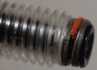
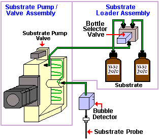

Troubleshooting Substrate Fluidics
Purpose
This procedure provides instructions for troubleshooting substrate fluidics issues.
When To Perform
Perform this procedure when troubleshooting these substrate system software and Event Log messages:
- QSB flag on test result
- Air in the fluidics line or other related dispense failures
- Substrate probe drawback calibration failed, so tests cannot be run
- Three consecutive failed substrate dispense, so no new tests will be started
System Issues and Event Log Errors
| Dispense Issue | Possible Causes | Troubleshooting |
|---|---|---|
| QSB flag on the test result. |
|
For detailed instruction for checking the possible causes refer to the Troubleshooting Substrate Fluidics table. |
A substrate dispense failure:
|
||
| Substrate probe drawback calibration failed so tests cannot be run. | ||
| Three consecutive failed substrate dispenses, so no new tests will be started. |
Troubleshooting Flow Charts
This procedure provides a flow chart for support personnel to troubleshoot substrate fluidics issues.
| Pre-Check | Fluidics Check |
|---|---|
| The attached flow chart is for checking the instrument when you first arrive on site before doing fluid dispense. | The attached flow chart is for trying to isolate the source of air entering the Substrate system. |
Hardware Changes Affecting Troubleshooting
| Hardware Change | Serial Numbers of Affected Instruments | Notes | Troubleshooting Effect |
|---|---|---|---|
| Click-N-Seal fittings (fittings that click when tightened correctly) |
|
The tubing is located:
|
|
| Current Version Substrate Probe (PEEK). |
|
Refer to the "Replace - Probe - Substrate" document for a chart explaining the differences and how to distinguish between the current and previous version substrate probe. | Check that the fitting on top of the PEEK probe is secure. |
Specifications - Substrate Priming and Drawback Calibration
| Parameter | Specification |
|---|---|
| Calibration Drawback Mean Step Count | 500-850 |
| Calibration Pullback CV | Less than or equal to 1.0% |
| Priming Monitoring Statistics - Amount of Fluid Detected |
|
Determining Percent Fluid
Perform these steps to save the trace file information for substrate dispense events.
Note: Intermittent issues can be difficult to troubleshoot since they may not appear during observation of the instrument. Searching the trace file may help troubleshooting.
Troubleshooting Substrate Fluidics: Pump, Tubing, Fittings, and Detector
- Prime the substrate one cycle and observe the aspirate probe 3 tubing. If substrate is not being pulled into aspirate probe 3, then:
- Troubleshoot the peristaltic pump and aspirate probe 3 system.
- Inspect the wash carousel for spilled substrate and clean if necessary.
- If the substrate area was serviced recently, then verify that the substrate was sufficiently primed.
Caution: The substrate system can require 5 to 15 primes to eliminate any air introduced to the system during troubleshooting.
- Verify that a tan PEEK substrate probe is installed.
Note: Mod 6718 installs a more reliable substrate probe in serial numbers 600740 and below.
- and enter
5 cycles requested, and select the
Disable Process Monitoring option.
Note: Select "Disable Process Monitoring" option will allow DxI system to flush out air in the substrate system.
- and enter
5 cycles requested, and select the
Calibrate Drawback option.
Note: Do not select "Disable Process Monitoring" during substrate drawback calibration.
- Watch the bubble-detector LED during priming. Observing the LED status during and at the end of the substrate dispense cycle can indicate a likely cause for the issue. The LED on the bubble detector PCB should cycle:
- LED on = air in the line.
- LED off = substrate in the line.
Note: Pump motion or belt issues are detected by the backlash check included in software V2.2 or above. - If the substrate bottle selector valve was recently replaced, then verify that both substrate bottles were sufficiently primed:
- Prime the in-use bottle ten cycles.
- Switch to the second bottle on the system by selecting .
- Prime ten cycles.
- Load a new substrate bottle on the side of the substrate loader that does not have a green light.
- Check for loose, damaged, or corroded connectors for the bubble detector signal on the pressure-sensor interface PCB:
- JP7 - power harness from bubble detect PCB
- JP8 - signal cable to upper left card cage and DAQC PCB
Note: Loose, damaged, or corroded electrical connections often produce 0% fluid detected events in trace files. - If troubleshooting backlash issues, then check for damaged or loose fittings on these components:
- Bottle caps and draw tube (two)
- Bottle selector valve (three)
- Substrate pump (two)
- Substrate probe (one)
Note: The Click-N-Seal fittings have an o-ring located between two small metal washers. If this o-ring is missing or damaged, then replace the tubing.

- Prime the substrate and inspect the entire system for bubbles. If bubbles are visible in the:
- Valve manifold between the bottle tubing and the selector valve, then troubleshoot:
- Tubing
- Tubing connection
- Bottle selector valve
- Valve manifold above the substrate pump, then troubleshoot:
- Tubing
- Tubing connection
- Pump valve o-rings
- Pump valve
- Bottle selector valve
- Pump piston chamber, then troubleshoot:
- Pump valve o-rings
- Pump valve
- Pump seals
- Pump heater only, then troubleshoot:
- Probe
- Probe tubing
- Pump valve o-rings
- Pump valve
- Valve manifold between the bottle tubing and the selector valve, then troubleshoot:
- Inspect the substrate area.
- Replace kinked or constricted substrate tubing.
- Replace warped or worn flares on the substrate tubing connections.
- Confirm that the substrate probe tubing is not kinked or constricted. If the insulation on the substrate probe tubing is damaged, replace the tubing.
- If there is substrate build-up under the substrate pump or pump piston, clean the pump and pump piston. If a leak is suspected, replace the seal.
- Replace broken substrate draw tubes from either substrate bottle.
- If the substrate pump belt is damaged or loose, replace the belt. For serial numbers less than 601419 and 900085, also install the substrate motor mounting bracket tensioner. Refer to the Fluidics: Installing Pump Belt and Tensioner Mounting Bracket (Substrate) procedure.
- Secure loose pump end-cap (located under the pump, holding the piston in the acrylic pump block).
- Adjust the substrate bubble detector. Refer to the Fluidics: Adjusting Substrate Bubble Detector procedure.
- Determine whether the substrate errors occur randomly or around substrate bottle changes. Refer to the
Fluidics: Determining Substrate Bottle Change During Troubleshooting procedure.
Note: This information helps identify whether to replace the substrate valve or substrate bottle selector valve.